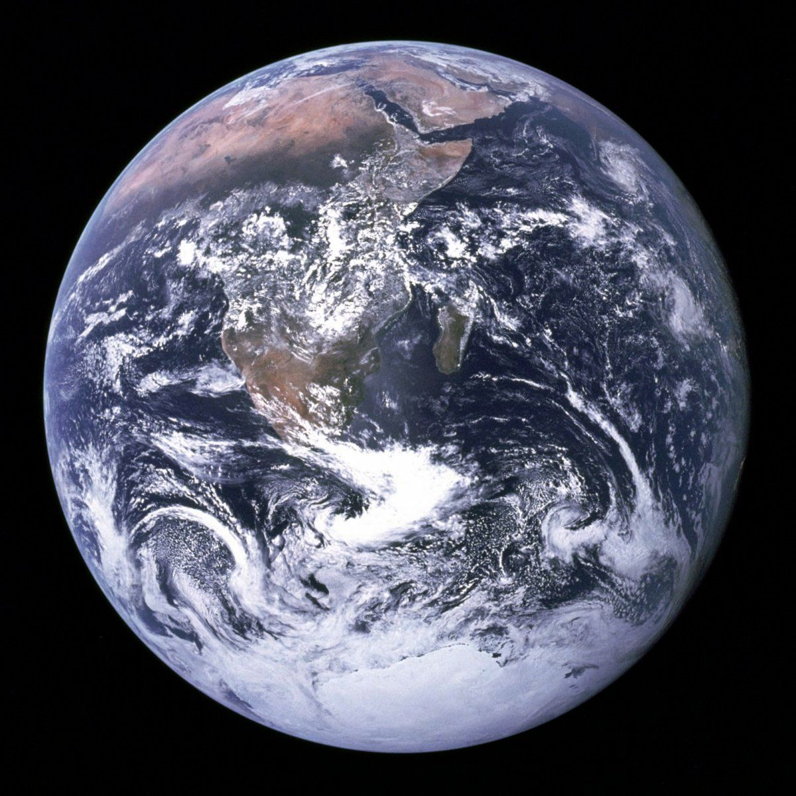
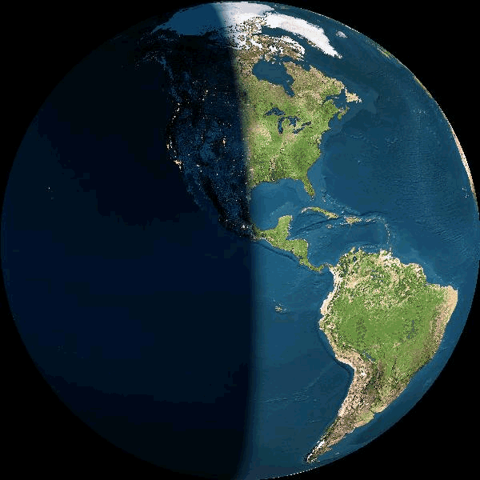

Pamant

- Pamantul, se roteste in jurul axei 23 de ore si 56 min.
- Se invarte în jurul Soarelui in 365,25 de zile.
- Temp maxima pe Pamant este de 58 ° C, iar temperatura minima este de -88°C.
- Gravitatia: 1 x. Diametrul planetei noastre este de 12,756 km.
- Atmosfera este formata din azot si oxigen.
- Are 1 luna, si nu are inele.
- Suprafata Pamântului este 75% acoperita cu apa.

Planeta Pamânt (numita si Terra sau „Planeta albastra”) este a treia planeta dupa distanta
fata de Soare si a cincea ca marime în sistemul solar. Terra face parte dintre planetele
interioare ale sistemului solar (planetele aflate în interiorul centurii de asteroizi).
Este cea mai mare planeta telurica din sistemul solar, si singura din Univers cunoscuta ca adapostind viata.
